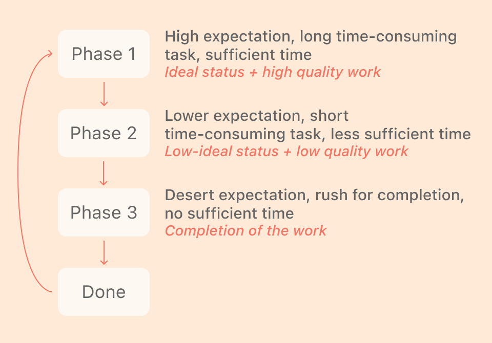

A gamified productivity app to combat academic procrastination
among students
Project Duration:
Two months (in 2019) Team:
1 Graphic Designer, 1 Researcher, 2 UX Designers My role:
Research Lead and UX Designer Research methods:
Affinity diagramming, paper prototyping, storyboarding, user testing Project outcome: Interactive Figma prototype
Along with the rise of technology, people are faced with an
increasing amount of distractions as they try to do their work
productively.
Existing apps fail to incentivise users to stop procrastinating.
02
Insight
Students procrastinate due to a wide variety of reasons, but a
prevailing reason was to provide pleasure outside of academic stress.
Students seek pleasure and begin to procrastinate to release stress.
03
Outcome
A
gamified task completion experience
to combat procrastination disguised as a productivity app.
Leverages theories on psychology and design to
increase a user’s pleasure surrounding their work.
Research Phase
Interviews
Our interviews revealed the following:
Smartphone usage distracts people
Anxiety towards a task causes people to delay it
Peer influence can deter and mitigate procrastination
Intrinsic motivation is necessary for people not to procrastinate
Common pattern

Affinity Diagram
Solution
A Different Approach
Rather than focusing on simply getting tasks done, Junto
makes the environment surrounding the task more enjoyable
through internal and external rewards to motivate users to accomplish their tasks.
Junto
Junto is a
productivity app that introduces rewards to users when they accomplish tasks
by unlocking and revealing mystery objects,
collecting these objects, and placing these in a virtual world or
in their rooms through augmented reality (AR).
Behind the Name Junto
The
Junto
(from the Spanish word for assembly, junta)
is a club that Benjamin Franklin formed in 1727. Franklin is well known for his
wit and famous phrases, some of which have to do with
combating procrastination and making the most of one’s time.
Theories Applied
Augmented Reality (AR) can serve as an incentive to overcome
procrastination - and this has yielded positive results.
By using AR, a user can see and interact with their object in
“real life.” This element makes the prize more “real” and furthers
the enjoyment aspect of Junto.
Curiosity itself can motivate behavior. It could serve as a form of
intrinsic motivation to incentivize people to complete more tasks, without negatively
affecting performance. Junto uses curiosity as motivation and
by displaying a mystery gift box unwrap in stages as users complete tasks.
Junto uses four of IBM Nudge Library's suggested design principles to achieve desired behavior.
Appeal to emotions: designing cute mystery objects and implementing an easy UI
with light colors
Anticipation: built through slow reveal of the mystery object
Progress in tasks: shown through the unwrapping of the present on the home screen
Habit cycle: creating tasks (cue), completing tasks on time (action), and receiving a
revealed mystery object (rewards).
Gamification has been defined as the use of “game-based mechanics,
aesthetics, and game thinking to engage people, motivate action,
promote learning, and solve problems.” (Kapp, 2012).
Junto involves making each individual tasks into a sort of game -
users complete one task to unlock part of a prize.
Procrastination often serves as relief or reward from undesired
activity. Junto provides immediate feedback upon task completion
through rewards to shift user focus from completing arduous tasks to unlocking rewards.
Junto allows users to enter into self-awareness when they see the gift box on the home screen.
The box adjusts to the progress made, so users can clearly see if they
are making progress based on the visual status of an unwrapped present.
This encourages users to match their behavior to their desired outcome
(to reveal the contents of the present by accomplishing their tasks).
Junto directly addresses four problems that must be overcome for successful goal
striving.
Theories for Goal Striving
Overcome the initiation of action on a goal.
Overcome distractions and stay on track with the goal.
Overcome failure and continue progress.
Overcome the avoidance of overextension and ego depletion.
How Junto Addresses Each Step
Users can easily add tasks with Canvas or a calendar app.
Junto increases pleasure surrounding work through collecting motivating mystery objects.
Junto provides sufficient motivation and pleasure to avoid counter-productive tasks.
Junto allows users to review amount of progress made through the collection page.
Social comparisons have the ability to change people’s goals and
actions, and suggest that the continued presence of positive role
models could have the ability to continually motivate one to
achieve a difficult goal. Junto allows users to view objects that
others in their social group have achieved so they can be motivated
by others’ progress. Additionally, the “remind” feature allows
users to remind their friends to complete their tasks.
Prototyping
Med-Fidelity Prototype
These are four screens from our med-fidelity prototypes.
In these prototypes, our main considerations were:
Making a clean, easy user interface
Disguising the intended anti-procrastination effect with a productivity checklist
Creating cute displays to encourage use of app
PreviousNext
User Testing
User testing revealed key insights that we used in iterating on our prototypes:
Mystery pets were not surprising enough (too much info was revealed early on)
Long term and short term scheduling is needed for motivation
Icons used did not convey meaning clearly
Final Design
Task Completion
AR and Virtual World
Social Features
Interactive Prototype
Reflection
Lessons Learned
By working on Junto, I learned several lessons. I learned to take
constructive criticism and be quick to iterate on designs.
I saw how iterating based on user feedback significantly improved Junto.
I also learned how to apply design and psychology theories through games.
This project enabled me to gain research skills and successfully apply
theories to user-centered design.
Overall, this project was difficult
given the quick timeline, but I really enjoyed it and I hope to
continue building on this project in the future.